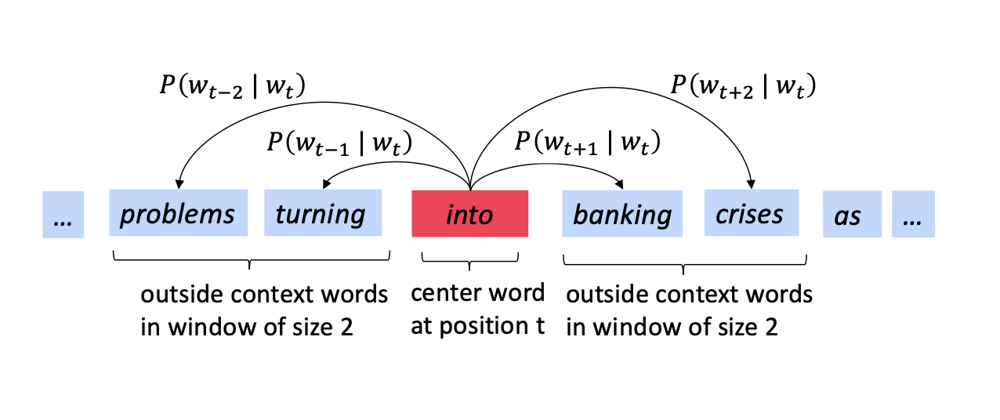
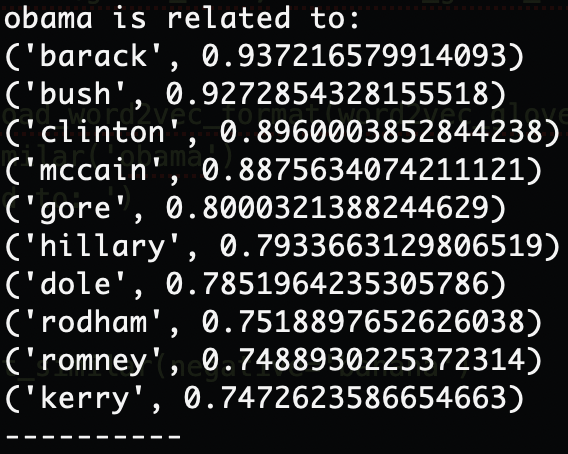
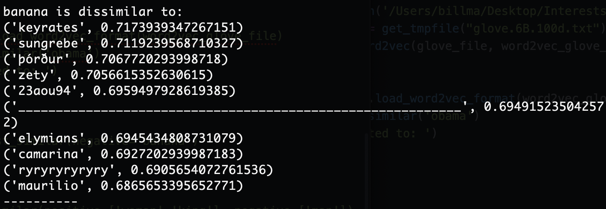
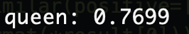

In this series of posts, we will tackle on another direction of AI - Natural Language Processing. Human language is a type of natural language which differs from normal programming language.
This post is split into four sections:
- The Basic Principles of word2vec
- Practice in Python
- Compute word2vec From Scratch
- Appendix - Mathematical Derivation
Source code: https://github.com/BillMaZengou/nlp_basis -> WordVector.ipynb
The Basic Principles of word2vec
To perform NLP, we need to first find a way to vectorise words so that we can put them into our applications.
One-hot Vector
The simplest method is the one-hot vector. Each word can be considered as a unit vector. For example,
\[
w^{a} =
\begin{bmatrix}
1\\
0\\
0\\
.\\
.\\
.\\
0
\end{bmatrix},
w^{at} =
\begin{bmatrix}
0\\
1\\
0\\
.\\
.\\
.\\
0
\end{bmatrix},
…
w^{zebra} =
\begin{bmatrix}
0\\
0\\
0\\
.\\
.\\
.\\
1
\end{bmatrix}
\]
However, in NLP, we would normally like to analysis words in the context. Therefore, we need the correlations between each word. For instance, when we search “house”, we expect to find anything related to houses like “home” or “apartment”. On the contrast, we also expect to find a low correlation between words like “house” and “cat”. Those are impossible to do with one-hot vectors because all the unit vectors are orthogonal. I.e.)
\[
(w^{house})^T w^{home} = (w^{house})^T w^{cat} = \mathbf{0}
\]
Previously, researchers tried to use WordNet’s list of synonyms to get similarity of the word vectors.
Note WordNet is like a large dictionary, which contains information like synonyms, hypernyms, etc.
The problem is that in WordNet, the synonyms are put together without a clear relationship between each word. Take “good” as an example, “proficient” is considered as a synonym of “good”. They represent the same meaning in some certain circumstances. However, they are not interchangeable in general. Therefore, it is well-known to fail badly to use WordNet to get the similarities of words.
Word2Vec
A better approach is to encode similarity into the word vectors. The key idea is to use so-called distributional semantics. A word’s meaning is given by the words that frequently appear close-by.
Word vectors, which are sometimes referred as word embeddings or word representations, are a distributed representation.
To obtain the distributed representation of word vectors, Word2Vec is a frequently used technique.
The Algorithm
- Get a large corpus of text.
- Every word in a fixed vocabulary is represented by a vector.
- Go through each position \(t\) in the text, which has a centre word \(c\) and context (“outside”) words \(o\).
- Use the similarity of the word vectors for \(c\) and \(o\) to calculate the probability of \(o\) given \(c\) (i.e. \(P(o|c)\)) or vice versa.
- Adjust the word vectors to maximise the probability.

Note Corpus is used in NLP to represent a bulk
The mathematical derivation can be found in Appendix.
Recall from \(\theta\) that, for each word, we have two vectors. We can average both at the end to obtain a better result of the optimisation.
In this post, we introduced a basic model of Word2Vec. It is called Skip-grams or SG for short. There is an alternative choice of the model called Continuous Bag of Words (CBOW)
For the optimisation, we can use Stochastic Gradient Descent which is faster than the normal gradient descent. We may discuss in detail in later posts.
Practice in Python
import numpy as np
import matplotlib.pyplot as plt
plt.style.use("ggplot")
from sklearn.manifold import TSNE
from sklearn.decomposition import PCA
from gensim.test.utils import datapath, get_tmpfile
from gensim.models import KeyedVectors
from gensim.scripts.glove2word2vec import glove2word2vec
glove_file = datapath('/Users/billma/Desktop/Interests/nlp_basis/data/glove.6B.100d.txt')
word2vec_glove_file = get_tmpfile("glove.6B.100d.txt")
dimension = glove2word2vec(glove_file, word2vec_glove_file)
print(dimension)
model = KeyedVectors.load_word2vec_format(word2vec_glove_file)
leader = model.most_similar('obama')
print('obama is related to: ')
for i in leader:
print(i)
anti_fruit = model.most_similar(negative='banana')
for i in anti_fruit:
print(i)
result = model.most_similar(positive=['woman','king'], negative=['man'])
print("{}: {:.4f}".format(*result[0]))Example results are shown below:
Similar Words To Obama

Dissimilar Words To Banana

Word Composition
\[
w_{King} - w_{Man} + w_{Woman} = w_{Queen}
\]

Compute word2vec From Scratch (TODO)
Appendix
For each position \(t = 1,…,T\), predict context words within a window of fixed size \(m\), given centre word \(w_j\), we have a likelihood function such that
\[
L(\theta) = \prod_{t=1}^T \prod_{-m \leq j \leq m, j \neq 0} P(w_{t+j}|w_t;\theta)
\]
The objective function, or so-called loss or cost function, \(J(\theta)\) is the normalised negative log likelihood,
\[
J(\theta) = -\frac{1}{T}log(L(\theta)) = -\frac{1}{T} \sum_{t=1}^T \sum_{-m \leq j \leq m, j \neq 0} log(P(w_{t+j}|w_t;\theta) )
\]
Thus, our goal is to minimise the objective function so that the predictive accuracy can be maximised.
The probability of the words are calculated using softmax function, which is commonly used in classification. Therefore,
\[
P(o|c) = \frac{exp(u_{o}^{T} v_c)}{\sum_{w}exp(u_{w}^{T} v_c)}
\]
where \(v_c\) and \(u_w\) are the word vectors. \(w\) is the context words.
In the objective function, \(\theta\) can represent all model parameters in one long vector. In our case with \(d\)-dimensional vectors and \(V\)-many words, we have a vector with \(2dV\) elements.
\[
\theta =
\begin{bmatrix}
v_{a}\\
.\\
.\\
.\\
v_{zebra}\\
u_{a}\\
.\\
.\\
.\\
u_{zebra}\\
\end{bmatrix}
\]
Note every word has two vectors.
To optimise the objective function, we need to take derivative for both \(v_c\) and \(u_w\).
Optimise with respect to \(v_c\)
\[
\frac{\partial}{\partial v_c} log(\frac{exp(u_{o}^{T} v_c)}{\sum_{w}exp(u_{w}^{T} v_c)})
\]
\[
=> \frac{\partial}{\partial v_c} u_{o}^{T} v_c - \frac{\partial}{\partial v_c} log(\sum_{w}exp(u_{w}^{T} v_c))
\]
\[
=> u_{o}^{T} - \sum_x \frac{exp(u_{x}^T v_c)}{\sum_{w}exp(u_{w}^{T} v_c)} u_x
\]
\[
=> u_{o}^{T} - \sum_x P(x|c) u_x
\]
Optimise with respect to \(u_w\)
\[
\frac{\partial}{\partial u_o} log(\frac{exp(u_{o}^{T} v_c)}{\sum_{w}exp(u_{w}^{T} v_c)})
\]
\[
=> \frac{\partial}{\partial u_o} u_{o}^{T} v_c - \frac{\partial}{\partial u_o} log(\sum_{w}exp(u_{w}^{T} v_c))
\]
\[
=> v_c - \frac{exp(u_{o}^T v_c)}{\sum_{w}exp(u_{w}^{T} v_c)} v_c
\]
\[
=> v_c - P(o|c) v_c
\]
Acknowledgement
The creation of this post is inspired by Datawhale. The learning path is based on Stanford University CS224n: Natural Language Processing with Deep Learning.
Reference
- Zh.gluon.ai. 2020. 10.1. 词嵌入（Word2vec） — 《动手学深度学习》 文档. [online] Available at: http://zh.gluon.ai/chapter_natural-language-processing/word2vec.html [Accessed 25 June 2020].
- Bilibili.com. 2020. [online] Available at: https://www.bilibili.com/video/BV1s4411N7fC?t=4725 [Accessed 25 June 2020].
- En.wikipedia.org. 2020. Natural Language Processing. [online] Available at: https://en.wikipedia.org/wiki/Natural_language_processing [Accessed 25 June 2020].
- Mikolov, T., Sutskever, I., Chen, K., Corrado, G.S. and Dean, J., 2013. Distributed representations of words and phrases and their compositionality. In Advances in neural information processing systems (pp. 3111-3119).